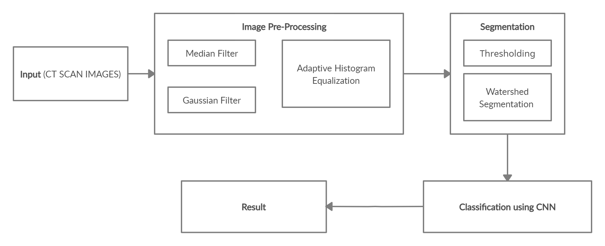
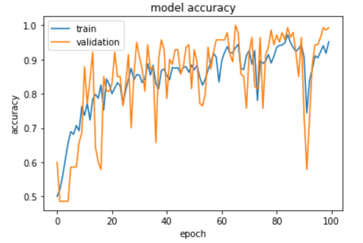
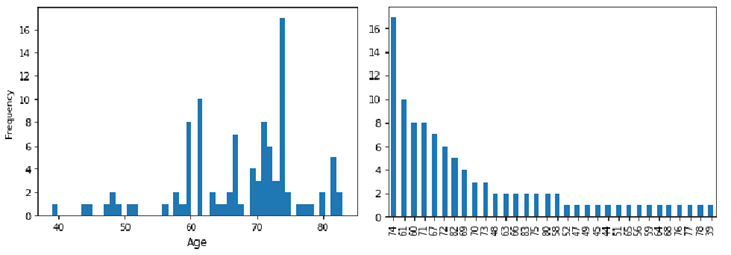
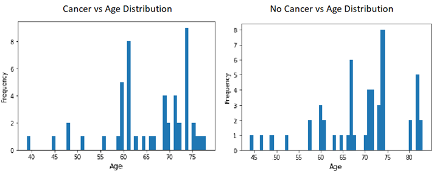

Lung Cancer Detection & Classification Using Image Processing and a 12-Layer CNN
An end-to-end medical imaging pipeline combining Median & Gaussian denoising, Adaptive Histogram Equalization (CLAHE), marker-controlled Watershed segmentation, 14× affine augmentation, and a custom 12-layer Convolutional Neural Network achieving 99.28% test accuracy on low-dose chest CT scans.
Interactive CT Preprocessing & Watershed Pipeline
Step through every transformation applied to raw DICOM chest CT slices—from noise suppression and local contrast enhancement to marker-controlled Watershed segmentation and K-Means comparison.

System Block Diagram
Interactive 14× Data Augmentation Lab
To prevent overfitting on the 100-slice CT dataset, we expanded the corpus 14× to 1,400 images using deterministic combinations of Shear (0°–20°), Scale (0.90–1.00), Horizontal Flip, and Vertical Flip. Select any of the 14 capstone presets or tweak parameters live below.
Live Affine Controls
All 14 Capstone Augmentation Folds (100 → 1,400)
Interactive 12-Layer Proposed CNN Inspector
Click any layer in the 31-module Keras Sequential stack (8 Conv2D + 8 BatchNorm + 4 MaxPool2D + 6 Dropout(0.7) + Flatten + 4 Dense) to inspect tensor dimensions, parameter math, and design rationale.
conv2d
Architecture Benchmark Dashboard
All four CNN architectures were trained on the exact same 1,400-image augmented dataset (80% train / 10% validation / 10% test, batch size 20, Adam optimizer, Binary Cross-Entropy).
Test Accuracy Comparison (%)
Capstone Training & Evaluation Plots

Complete Evaluation Matrix (Table 7.1)
| Model | Layers | Parameters | Accuracy | Precision (0 / 1) | Recall (0 / 1) | F1-Score (0 / 1) | Train Loss | Val Loss | Errors (/140) |
|---|---|---|---|---|---|---|---|---|---|
| LeNet | 5 | 7,391,874 | 88.57% | 0.84 / 0.91 | 0.91 / 0.85 | 0.87 / 0.88 | 2.42e-05 | 0.9127 | 17 |
| AlexNet | 8 | 56,305,730 | 89.99% | 0.88 / 0.92 | 0.91 / 0.89 | 0.89 / 0.91 | 0.2752 | 0.9657 | 14 |
| VGG16 | 16 | 165,724,866 | 51.43% | 0.46 / 0.00 | 1.00 / 0.00 | 0.63 / 0.00 | 0.6931 | 0.6930 | 75 |
| Proposed 12-Layer CNN | 12 | 52,843,458 | 99.28% | 0.98 / 1.00 | 1.00 / 0.99 | 0.99 / 0.99 | 0.1812 | 0.0235 | 1 |
Kaggle Lung CT Challenge Corpus Analysis
100 balanced middle-slice DICOM chest CT scans (50 positive / 50 negative, patient ages 39–83, mean age 67.5 years) showing higher prevalence in patients aged 60+, expanded 14× to 1,400 images (1,120 train / 140 validation / 140 test).


Capstone Poster, Final Report & Citation
Submitted in partial fulfillment of the B.Tech in Electronics & Communication Engineering at PES University, Bengaluru (August 2020 – May 2021).